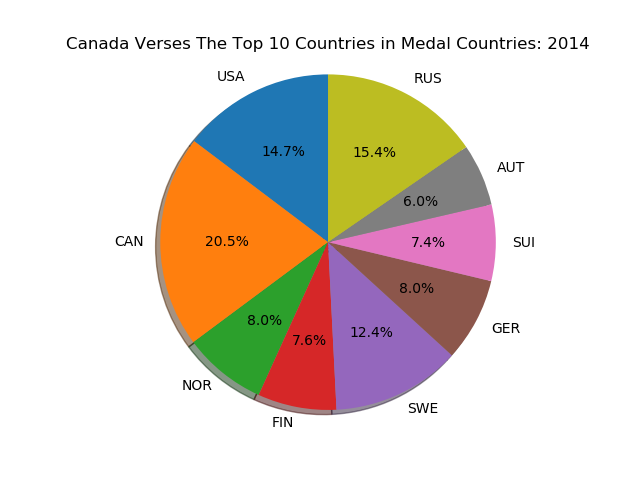
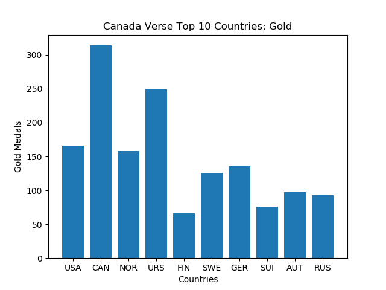

Canada's Winter Olympics History
Canada's All Time Winter Olympics Medal Ranking
Throughout the course of Winter Olympics, from 1896 to 2014, Canada has ranked within the top ten countries in all medal count. Canada has been able to hold about 14% of the top ten's medals and being only second to the United States.
Canada's Most Recent Winter Olympics Medal Ranking
In the 2014 Winter Olympics Canada was able to improve to the first place spot in medal rankings by obtaining the most medals. In 2014 Canada was able to hold 23% of the top nine's medal count, surpassing the United States.
Top Ten Countries Medal Count Rankings
In the next three bar graphs are visual representation of the bronze, sliver and gold medal counts for the top 10 ten countries all time. In the graph Canada by far wins the most gold medals, while winning the second most silver and lastly winning sixth most bronze medals in comparison to the other top ten countries.
